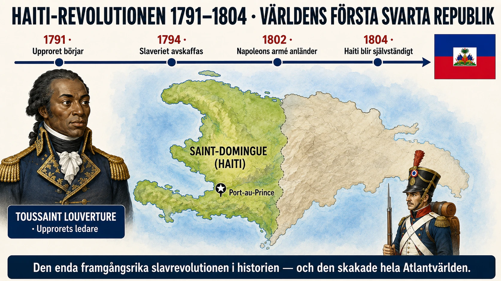

Slaveri och motstånd hör ihop
Det finns en farlig myt om slaveriet. Den är att de förslavade var "passiva offer" — att de underkastade sig sin situation och inte gjorde motstånd. Den myten är fel.
Slaveriet och motståndet hör ihop. Från den första afrikan som tvingades ombord ett slavskepp till den sista som befriades, fanns det motstånd. Motstånd i det stora — uppror, flyktförsök, krig. Motstånd i det lilla — sång, språk, religion, vägran. De förslavade var aldrig bara offer. De var människor som kämpade för sin värdighet under omöjliga omständigheter.
Denna djupdykning handlar om det motståndet. Det är pedagogiskt viktigt. Att förstå slaveriet utan att förstå motståndet är att fortsätta dehumaniseringen.
Fyra former av motstånd
Historiker talar ofta om fyra olika former av motstånd mot slaveriet.
1. Vardagligt motstånd. Detta var det vanligaste. På plantagerna gjorde de förslavade alla små saker de kunde för att skydda sig själva och skada systemet. De arbetade långsamt när uppsynsmännen inte tittade. De låtsades vara sjuka. De gick sönder redskap "av misstag". De gömde mat. De skyddade varandra från piskan när de kunde. Detta motstånd var sällan dokumenterat, eftersom det inte var officiellt — men det var ständigt närvarande.
2. Flykt. Att fly från en plantage var farligt — om man fångades var straffet ofta lemlästning eller död. Men många försökte ändå. På vissa platser fanns det skog eller bergsområden där rymda slavar kunde gömma sig. Dessa människor kallades maroons (från det franska marron) eller, i Brasilien, quilombolas.
På flera platser bildade maroons sina egna samhällen. Det mest kända är Quilombo dos Palmares i nordöstra Brasilien. Det fanns från cirka 1605 till 1694 och hade på sin höjdpunkt omkring 20 000 invånare — en självständig stat av rymda slavar mitt i den portugisiska kolonin. Palmares hade jordbruk, hantverk, lagar och armé. Den motstod gång på gång portugisiska militära angrepp. När den till slut förstördes 1694 var det efter åratal av krig. Dess sista ledare, Zumbi, blev senare en svart nationalhjälte i Brasilien.
3. Kulturell överlevnad. Detta är en form av motstånd som ibland missas. De förslavade tog med sig språk, religioner, sånger, historier och kunskap från Afrika. Mycket av detta överlevde och blandades med europeiska och inhemska element.
Vodou i Haiti, candomblé och umbanda i Brasilien, santería på Kuba — alla har sina rötter i afrikansk religion som vägrade dö ut. Capoeira i Brasilien — en kampsport som är förklädd till dans — utvecklades av förslavade som ville träna sig att försvara sig utan att slavägaren skulle förstå.
Gospel, blues, jazz, samba, reggae, calypso — all denna musik har afrikanska rötter som överlevde slaveriet och formade hela kulturer.
Att hålla kvar sin identitet är att vägra bli en vara. Det är ett av de djupaste formerna av motstånd.
4. Öppna uppror. Detta var det mest dramatiska — och det farligaste. Genom slaveriets historia var det hundratals uppror, både stora och små. De flesta misslyckades och slutade i brutal repression. Men några förändrade världen.
Haitis revolution — den största omvälvningen
Den viktigaste händelsen i hela slaveriets historia är Haitis revolution 1791–1804. Det var den enda gången i historien som ett slavuppror inte bara lyckades utan ledde till skapandet av en självständig stat.
Bakgrunden: Haiti hette på 1700-talet Saint-Domingue och var en fransk koloni på västra delen av ön Hispaniola. Det var den rikaste kolonin i hela världen — den producerade hälften av världens socker och en stor del av världens kaffe. På ön bodde ungefär 500 000 förslavade afrikaner, 40 000 vita kolonister och 30 000 fria färgade människor.
Förhållandena för de förslavade var bland de värsta som någonsin dokumenterats. Sockerproduktionen var brutal — slavarna dog i sådan takt att plantageägarna ständigt behövde importera nya. Genomsnittlig livstid för en slav på Saint-Domingue var 5–7 år från ankomst.
Revolutionen startar: Den 22 augusti 1791 började upproret. Tusentals förslavade på den norra delen av ön gick samman och attackerade plantage efter plantage. Inom veckor brann hela regionen. Den franska kolonin var inte beredd — de hade aldrig tänkt sig att de förslavade kunde organisera ett sådant uppror.
Toussaint Louverture: Snabbt växte en ledare fram. Toussaint Louverture (1743–1803) var själv en frigiven slav som arbetat på en plantage. Han var i 48-årsåldern när revolutionen började och visade sig vara en militär och politisk genier. Han organiserade slavarna i en disciplinerad armé. Han spelade ut Frankrike, Spanien och England mot varandra — de tre europeiska makterna som alla hade intressen i Karibien. Han förhandlade, krigade, byggde institutioner.
Komplikationer: Revolutionen blev komplicerad av att den ägde rum samtidigt som franska revolutionen (1789–1799). När franska revolutionärerna i Paris förklarade "Mänskliga rättigheter" 1789 ledde det till en debatt: gällde dessa rättigheter också svarta människor i kolonierna? Svaret från Paris var länge oklart. När det franska konventet 1794 äntligen avskaffade slaveriet i alla franska kolonier, var det delvis ett erkännande av det Toussaint redan hade vunnit på Haiti.
Napoleon försöker återinföra slaveriet: Men 1802 ändrade Napoleon Bonaparte — som tagit makten i Frankrike — kursen. Han skickade en stor armé under sin svåger general Leclerc för att besegra Toussaint och återinföra slaveriet på Haiti. Toussaint kapitulerade tillfälligt och blev förrädiskt fångad. Han fördes till Frankrike och dog i ett fängelse i Alperna 1803.
Slutet: Men hans efterträdare Jean-Jacques Dessalines fortsatte kampen. Den franska armén — försvagad av tropiska sjukdomar (särskilt gula febern) — besegrades till slut. Den 1 januari 1804 förklarade Dessalines Haiti självständigt. Det blev:
- Världens första svarta republik
- Det andra självständiga landet i Amerika (efter USA)
- Det enda landet som någonsin uppstått ur ett framgångsrikt slavuppror
Vad Haitis revolution betydde
Haitis revolution chockade världen. Den visade att slaveriet inte var oförändrabart. Att förslavade människor kunde resa sig, organisera sig, slå tillbaka och vinna.
För europeiska makter blev Haiti en mardröm. De fruktade att exemplet skulle sprida sig — att slavar i andra delar av Karibien, i USA, i Brasilien skulle göra uppror. Haiti blev internationellt isolerat under decennier. Frankrike krävde en enorm "skadeståndsbetalning" från Haiti för förlorade plantager — en skuld som tog Haiti över 100 år att betala och som drev landet in i fattigdom.
För andra slavar blev Haiti en symbol av hopp. Berättelser om Toussaint och Dessalines spreds i hemlighet på plantager över hela Amerika. När den amerikanske slavledaren Frederick Douglass senare arbetade för avskaffande sade han: "Vad Haiti gjorde, kunde vi göra."
För historikerna blev det en kompletterande bild av "frihet och revolution" i den tidigmoderna tiden. Amerikanska frihetskriget (1775–1783), franska revolutionen (1789–1799) och Haitis revolution (1791–1804) ägde rum nästan samtidigt. Men medan amerikanska och franska revolutionerna är välkända och firade, har Haitis länge varit underbevärad.
Andra stora slavuppror
Haiti var inte unikt. Det fanns många stora slavuppror:
Nat Turners uppror i Virginia, USA (1831). En förslavad predikant ledde över 60 slavar i ett uppror som dödade omkring 60 vita. Upproret krossades brutalt och Turner avrättades. Det skakade dock amerikansk slavhållarsamhälle och bidrog till spänningar som skulle leda till amerikanska inbördeskriget.
Bahia-upproret i Brasilien (1835). Förslavade muslimska slavar planerade ett stort uppror i staden Salvador. Det upptäcktes innan det utbröt och hundratals deltagare avrättades eller piskades.
Demerara-upproret i Brittiska Guyana (1823). Tusentals förslavade gjorde uppror. Det krossades brutalt men bidrog till att skapa avskaffanderörelsen i Storbritannien.
Vad ska du ta med dig?
Slavupproren — och allt motstånd som omgav dem — visar tre saker:
1. De förslavade var inte passiva. Från första stund var det motstånd. Att tänka annorlunda är att fortsätta dehumaniseringen.
2. Frihet vinns med kamp. Slaveriet avskaffades inte bara för att europeiska och amerikanska politiker plötsligt blev moraliska. Det avskaffades efter århundraden av motstånd från de förslavade själva. Haiti var den dramatiska kulmen, men varje slavuppror, varje flykt, varje sång i hemlighet — allt bidrog till slutet.
3. Historia är ojämn. Amerikanska och franska revolutionerna firas än idag. Haitis revolution glöms ofta bort. Det är värt att fråga varför. När förslavade människor gör revolution mot kolonialmakter, vems berättelse blir den officiella?
Att läsa om Haiti är att läsa om människors mod när de står ensamma mot världens mäktigaste imperier. Och det är att se att den globala historien är mer komplex än Europa-centrerade läroböcker ibland gör den till.